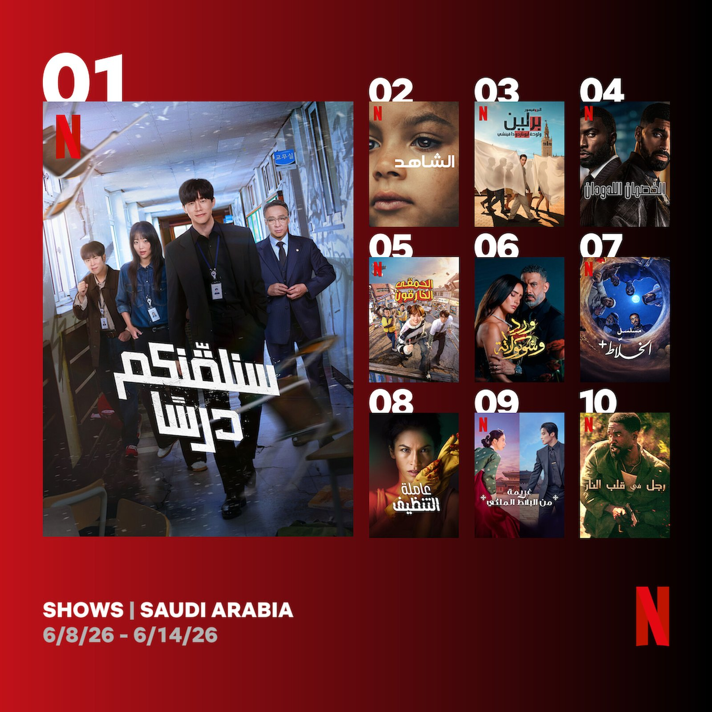
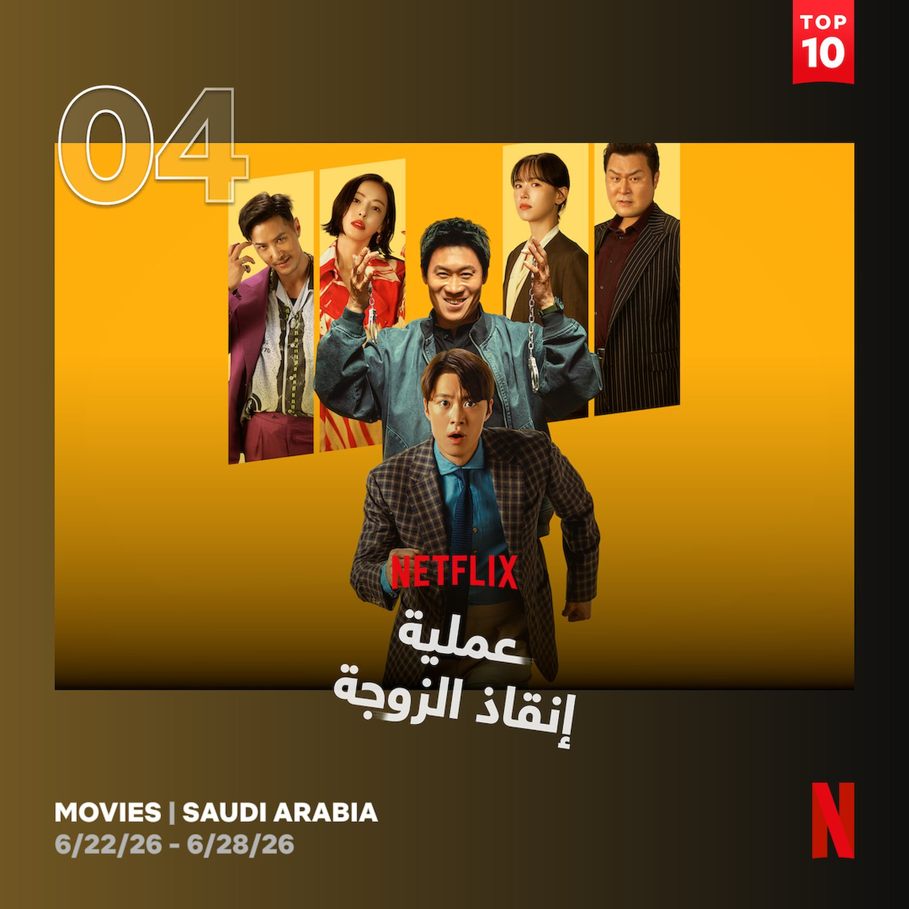

6월 사우디아라비아 넷플릭스에서는 한국 콘텐츠가 드라마와 영화 부문 모두에서 꾸준한 강세를 이어갔다. 특히 제작국별 작품 수 기준으로 미국에 이어 2위를 차지하며, 아랍권 현지 콘텐츠는 물론 지리적으로 가까운 인도와 스페인·폴란드·영국 등 유럽 국가들보다도 높은 존재감을 보였다. 5월에 이어 두 달 연속 제작국 2위를 기록한 것으로, 사우디 스트리밍 시장에서 한국 콘텐츠의 경쟁력이 일시적인 현상이 아니라 지속적인 흐름으로 자리 잡고 있음을 보여줬다.
〈참교육〉 한 달 내내 최상위권… 〈김부장〉 톱10 진입, 〈옥씨부인전〉·〈원더풀스〉도 장기 흥행
6월 시리즈 부문에서 가장 눈에 띈 작품은 10부작 드라마 〈참교육(Teach You a Lesson)〉(연출 홍종찬, 극본 이남규·김다희·문종호)이다. 6월 5일 넷플릭스를 통해 공개된 이 작품은 2·3주 차 2주 연속 1위에 올랐으며, 1주 차부터 4주 차까지 한 차례도 톱10 상위권에서 벗어나지 않으며 한 달 내내 사우디 시청자들의 높은 관심을 받았다. 작품은 선을 넘는 학생과 교사, 학부모로 인해 무너진 교권을 바로 세우기 위해 창설된 교권보호국의 활약을 그린 수사·액션·범죄 드라마다. 공개 당시 넷플릭스 글로벌 1위에 오르는 등 전 세계적인 흥행을 기록했으며, 이러한 인기는 사우디아라비아에서도 이어졌다.

사우디아라비아 넷플릭스에서 6월 2·3주 차 1위를 기록한 드라마 〈참교육〉 — 출처: 투둠 바이 넷플릭스(Tudum by Netflix)
소지섭 주연의 〈김부장(Agent Kim Reactivated)〉도 상승세를 보였다. 6월 마지막 주에 4위로 처음 진입하며 눈길을 끌었으며, 은퇴한 요원이 다시 현장에 복귀하는 액션 스릴러 장르로 사우디 시청자들의 관심을 모았다. 판타지 사극 〈옥씨부인전(My Royal Nemesis)〉도 6월 내내 꾸준히 순위권을 유지했다. 조선시대를 배경으로 악녀의 영혼이 깃든 무명배우와 재벌 후계자의 이야기를 그린 이 작품은 독특한 설정과 유쾌한 전개를 앞세워 현지 시청자들의 관심을 이어갔다. 〈원더풀스(The WONDERfools)〉 역시 1·2주 차에 이어 후반부에도 순위권에 오르며 장기 흥행을 이어갔다.
영화 부문에서는 박규태 감독의 코미디 영화 〈남편들(Husbands in Action)〉이 눈에 띄는 성과를 거뒀다. 6월 19일 넷플릭스를 통해 공개된 직후 3주 차 영화 부문 톱10에 진입한 데 이어, 4주 차에는 4위까지 상승하며 흥행세를 이어갔다. 사우디 넷플릭스에서 한국 영화가 톱10에 이름을 올리는 사례가 드라마에 비해 드문 점을 고려하면 더욱 의미 있는 성과로 평가된다.

사우디아라비아 넷플릭스 6월 4주 차 4위를 기록한 영화 〈남편들〉 — 출처: 투둠 바이 넷플릭스(Tudum by Netflix)
특정 작품에만 관심이 집중되기보다 여러 한국 드라마가 동시에 순위권을 유지한 점은 사우디에서 한국 콘텐츠의 저변이 한층 확대되고 있음을 보여준다. 5월에는 〈기리고〉·〈오늘도 매진했습니다〉·〈멋진 신세계〉·〈원더풀스〉 등이 흥행을 이끌었다면, 6월에는 〈참교육〉·〈김부장〉·〈남편들〉이 바통을 이어받으며 한국 콘텐츠의 흥행세가 꾸준히 이어지는 모습을 보였다.
미국 이어 2위… 아시아·아랍권 중 독보적 선두
6월 사우디 넷플릭스 영화·TV 시리즈 톱10에 등장한 고유 작품을 제작국별로 분석한 결과, 미국이 TV 8편·영화 13편 등 총 21편으로 압도적인 1위를 차지했다. 한국은 TV 4편·영화 1편 등 총 5편으로 2위에 올랐다. 전체 작품 수에서는 미국과 격차가 크지만, TV 시리즈만 놓고 보면 미국 8편·한국 4편으로 차이가 크게 좁혀졌다. 미국이 영화 부문에서 압도적인 우위를 보인 반면, TV 시리즈에서는 한국 콘텐츠가 경쟁력을 입증한 셈이다.
| 제작국 | TV | 영화 | 합계 | 순위권 주요 작품 |
|---|---|---|---|---|
| 미국 | 8 | 13 | 21 | 〈나를 찾아줘〉, 〈아바타: 아앙의 전설〉, 〈007 노 타임 투 다이〉, 〈오피스 로맨스〉 등 |
| 대한민국 | 4 | 1 | 5 | 〈참교육〉, 〈김부장〉, 〈옥씨부인전〉, 〈원더풀스〉, 〈남편들〉 |
| 인도 | 0 | 3 | 3 | 〈부트 방글라〉, 〈마아 베헨〉, 〈블래스트〉 |
| 스페인 | 2 | 1 | 3 | 〈베를린〉, 〈오아시스〉, 〈낯선 여인〉 |
| 이집트 | 0 | 2 | 2 | 〈패밀리 비즈니스〉, 〈에사예트 엘 마아후〉 |
| 사우디아라비아 | 1 | 1 | 2 | 〈알할랏: 더 시리즈〉, 〈알자르파: 한후니아 지옥 탈출〉 |
| 폴란드 | 0 | 1 | 1 | 〈악의 색: 블랙〉 |
| 영국 | 1 | 0 | 1 | 〈증인〉 |
| 터키 | 1 | 0 | 1 | 〈어나더 셀프〉 |
| 멕시코 | 1 | 0 | 1 | 〈장미와 초콜릿〉 |
| 일본 | 1 | 0 | 1 | 〈바이럴 히트〉 |
6월 사우디아라비아 넷플릭스 영화·TV 시리즈 톱10 제작국별 분석(고유 작품 기준) — 출처: 투둠 바이 넷플릭스(Tudum by Netflix)
미국을 제외하면 한국의 존재감은 더욱 두드러졌다. 아시아에서는 일본이 〈바이럴 히트(Viral Hit)〉 1편을 올리는 데 그쳤고, 중국과 동남아시아 국가들은 순위권에 진입하지 못했다. 한국은 5편으로 아시아 국가 가운데 가장 많은 작품을 순위권에 올렸다. 아랍권에서도 한국 콘텐츠의 강세는 이어졌다. 사우디아라비아가 TV와 영화 각 1편씩 총 2편, 이집트가 영화 2편을 기록하는 데 그친 반면, 한국은 총 5편으로 현지 콘텐츠를 앞섰다. 또한 지리적으로 가까운 인도(3편)보다도 많은 작품이 순위권에 포함됐으며, 스페인(3편)·폴란드(1편)·영국(1편)·터키(1편)·멕시코(1편) 등 유럽과 중남미 국가들도 이름을 올렸지만 단일 국가 기준으로는 한국(5편)이 이들보다 많은 작품을 기록했다.
액션·범죄·코미디 장르 선호 뚜렷… 한국 콘텐츠, 장르 다양성도 입증
장르별로는 액션과 범죄·스릴러, 코미디가 가장 높은 비중을 차지했다. 이는 사우디 시청자들이 빠른 전개와 긴장감 있는 서사, 오락성을 갖춘 작품을 선호하는 경향을 보여준다. 미국 콘텐츠는 범죄 드라마와 액션, 애니메이션 등 다양한 장르에서 고르게 강세를 보였다. 스페인은 〈베를린〉·〈오아시스〉·〈낯선 여인〉 등 범죄·미스터리 장르 작품 3편을 톱10에 올리며 유럽 국가 가운데 가장 두드러진 성과를 냈고, 인도는 코미디·호러·액션 장르의 영화 3편이 순위권에 진입했다. 이집트는 코미디 영화 2편이 꾸준히 상위권을 유지하며 아랍권 콘텐츠의 저력을 보여줬으며, 영국의 〈증인(The Witness)〉은 1992년 실제 살인 사건을 소재로 한 범죄 드라마로 4주 내내 순위권을 지켰다.
한국 콘텐츠도 특정 장르에 치우치지 않는 경쟁력을 보였다. 액션·범죄 장르의 〈참교육〉과 〈김부장〉, 판타지 사극 〈옥씨부인전〉, 슈퍼히어로 코미디 〈원더풀스〉, 코미디 영화 〈남편들〉까지 다양한 장르의 작품이 고르게 순위권에 올랐다. 이는 한국 콘텐츠가 특정 장르에 의존하기보다 폭넓은 장르 스펙트럼으로 현지 시청자층을 공략하고 있음을 보여준다.
5월에 이어 6월에도 제작국 기준 미국에 이어 2위를 기록한 한국 콘텐츠는 아랍권·아시아·유럽 등 다양한 국가의 작품과 경쟁하는 사우디 넷플릭스 시장에서 꾸준한 존재감을 이어갔다. 특히 단일 작품의 일시적인 흥행이 아니라 여러 작품이 동시에 상위권에 오른 점은, 한국 콘텐츠가 중동 스트리밍 시장에서 안정적인 입지를 넓혀가고 있음을 보여주는 대목이다.
사진출처 및 참고자료
— 투둠 바이 넷플릭스(Tudum by Netflix), netflix.com/tudum/top10/saudi-arabia